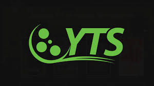

Best Movie sites
YIFY Torrents or YTS was a peer-to-peer release group known for distributing large numbers of movies as free downloads through BitTorrent (see copyright infringement). YIFY releases were characterised through their consistent HD video quality in a small file size, which attracted many downloaders.

Netflix, Inc. is an American technology and media services provider and production company headquartered in Los Gatos, California. Netflix was founded in 1997 by Reed Hastings and Marc Randolph in Scotts Valley, California. Wikipedia